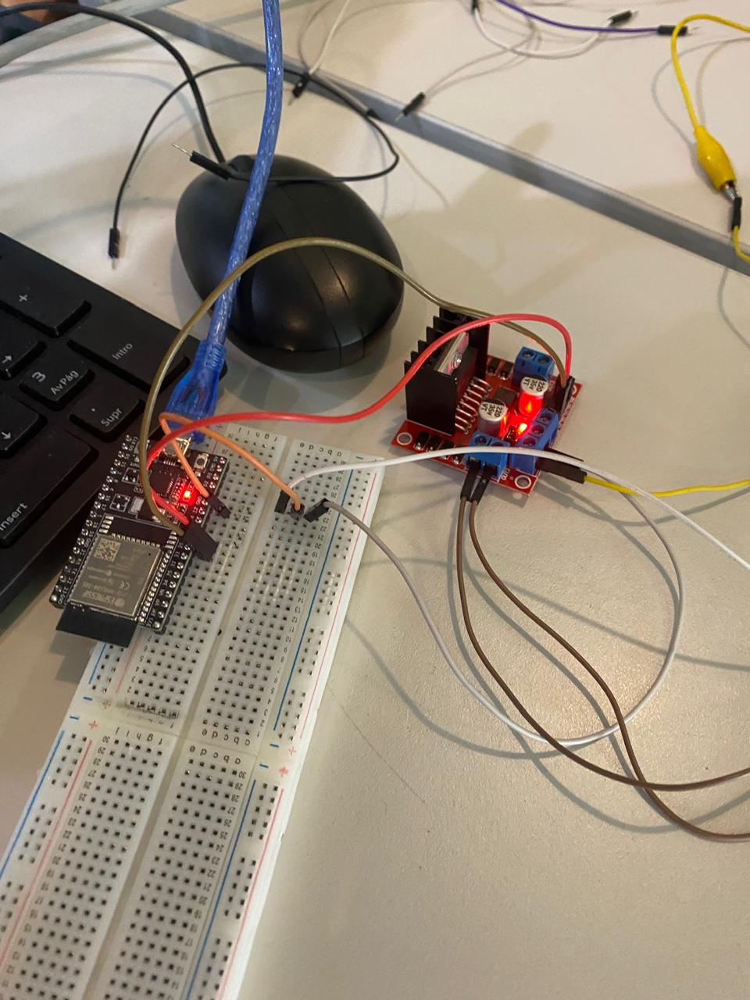
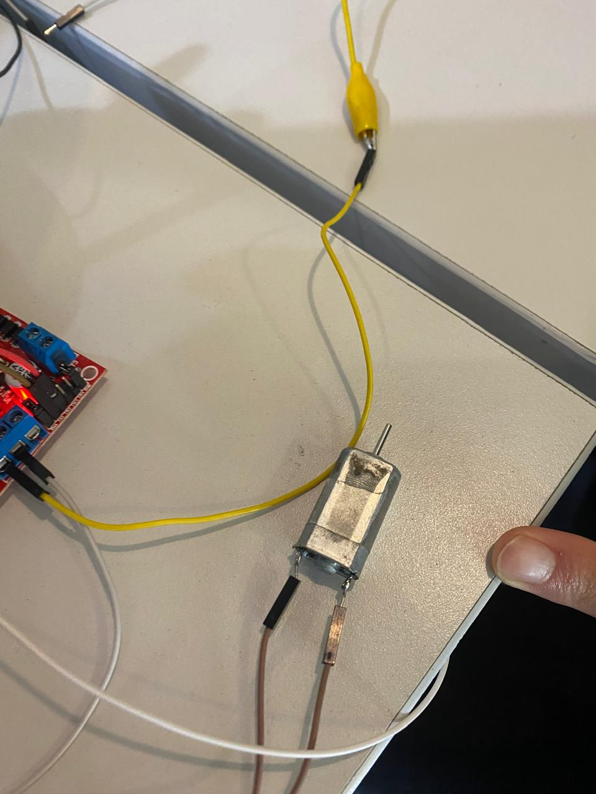
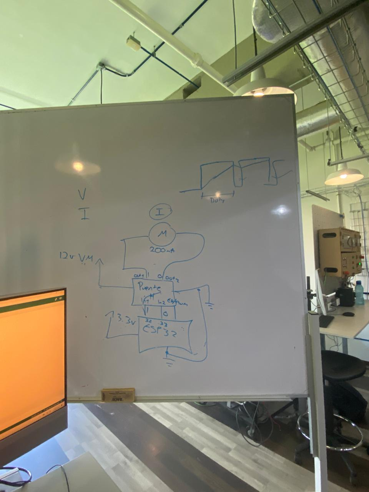
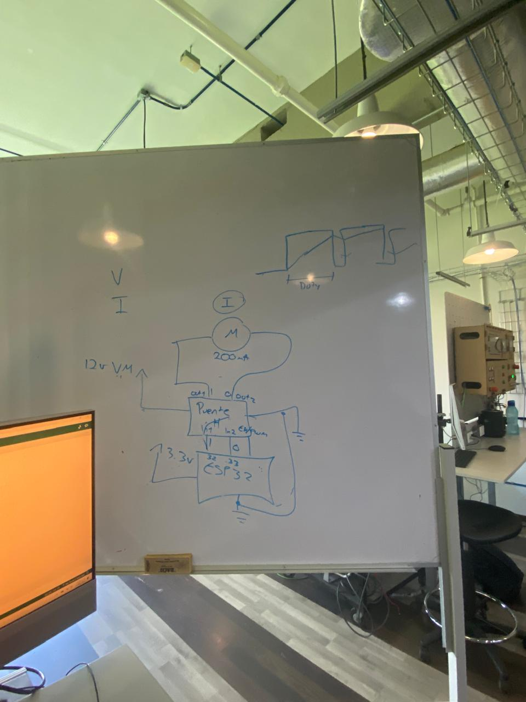

Practicas de clase
Practica 1 - Encendido de LED
Introduccion
La práctica se enmarcó dentro de la materia de Introducción a la Mecatrónica y tuvo como finalidad el estudio y la aplicación del circuito integrado temporizador 555. El manejo de temporizadores y la generación de señales de reloj son fundamentales para el diseño de sistemas de control y automatización.
- Los objetivos principales de esta práctica fueron:
Comprender el principio de funcionamiento del circuito integrado 555 en su configuración astable. * Diseñar e implementar un circuito intermitente capaz de controlar el encendido y apagado de un LED. * Calcular y ajustar los componentes pasivos R_1, R_2 y C_1 para lograr un periodo de oscilación total (T) entre 1 y 5 segundos.
Marco Teorico
Circuito Integrado 555 (Modo Astable):
El 555 en modo astable opera como un multivibrador auto-oscilante, lo que significa que su salida (Pin 3) conmuta continuamente entre el estado ALTO y BAJO sin necesidad de una entrada externa. El tiempo que permanece en cada estado lo define la carga y descarga del capacitor a través de las resistencias.
Fórmulas de Cálculo y Componentes:
El diseño se basa en las siguientes ecuaciones, donde los valores utilizados son:
- R1 = 1 k Omega
- R2 = 35 k Omega
- C1 = 100 mu F
Formulas:
- Tiempo de Apagado: 0.693 (R_2) (C_1)
- Tiempo de Encendido: 0.693 (R_1 + R_2) (C_1)
- Período Total: 0.693(R_1 + 2R_2) (C_1(
Procedimiento
- Materiales y Equipo
- Circuito Integrado 555
- LED
- Resistencias de 1 y de 35
- Capacitor de 100 Mu F
- Fuente de alimentación (VCC).
- Protoboard y cables de conexión.
- Osciloscopio y/o cronómetro (para verificación).
Procedimiento de Montaje
1.- Cálculo: Se verificó el valor teórico del período con los componentes seleccionados, obteniendo $T \approx \mathbf{4.92 \text{ segundos}}$.
2.-Cableado del CI: El CI 555 se colocó en la protoboard. Los Pines 8 (VCC) y 4 (Reset) se conectaron a VCC y los Pines 1 (GND) y 5 (Control) se conectaron a tierra.
3.- Red RC (Temporización):
-
R_1 kOmega se conectó entre VCC y el Pin 7 (Discharge).
-
R_2 35 kOmega se conectó entre el Pin 7 y los Pines 6 y 2 (unidos).
-
C_1 100 mu F se conectó desde los Pines 6/2 a tierra.
4.- Salida: El Pin 3 (Output) se conectó a la resistencia limitadora R_3 1 kOmega, y esta al ánodo del LED, cuyo cátodo fue a tierra.
5.-Verificación: Se aplicó la fuente de alimentación para observar el parpadeo del LED y se utilizó el osciloscopio para medir el período de la señal.
Resultados
-
Tiempo de Apagado: 2.43 segundos
-
Tiempo de Encendido: 2.49 segundos
-
Período Total: 4.92 segundos
Conclusion
La práctica fue exitosa al implementar el oscilador Astable utilizando el CI 555 y demostró la capacidad de controlar el tiempo de un circuito analógico mediante la correcta selección de la red RC. El uso de $R_2 = 35 kOmega y $C_1 = 100 mu F produjo un parpadeo lento con un período cercano a 2 segundos entre encendido y apagado.

Practica 2 - Encendido y apagado de LED con ESP32
Introduccion
Esta práctica es fundamental en la introducción a los sistemas embebidos y la Mecatrónica. Se centra en el control digital más básico: el manejo de una salida (output) mediante un microcontrolador. Se utilizó el ESP32 para controlar directamente un Diodo Emisor de Luz (LED), confirmando el correcto funcionamiento de los pines.
Los objetivos principales de esta práctica fueron:
- Establecer la comunicación y programación del microcontrolador ESP32.
- Implementar un control digital ON/OFF (encendido y apagado) para el estado del LED.
Marco Teorico
Microcontrolador ESP32El
ESP32 es la placa de desarrollo utilizada para alojar y ejecutar el código de control. Sus pines de GPIO (General-Purpose Input/Output) pueden ser configurados para funcionar como salidas que aplican un voltaje (estado ALTO, generalmente 3.3 o 0 (estado BAJO).
Control Digital ON/OFF
El LED se controla mediante una lógica digital simple:
Estado ALTO (1): El pin GPIO suministra voltaje, y el LED se enciende. Estado BAJO (0): El pin GPIO se pone a $0 , y el LED se apaga.
Funciones Clave
El código utiliza tres funciones principales del entorno de Arduino:
pinMode(pin, OUTPUT): Configura el pin seleccionado (led = 13) para que funcione como una salida de voltaje.
digitalWrite(pin, value): Envía una señal digital (ALTO o BAJO) al pin.
delay(ms): Pausa la ejecución del código por el número de milisegundos (ms) especificado, estableciendo la temporización del parpadeo.
Procedimiento
Materiales y Equipo * Microcontrolador ESP32 * LED * Resistencias * Cables Jumpers * Protoboards * Computadora con IDE de Arduino
Procedimiento para conexion
1.- Se conectó el pin ánodo (pata larga) del LED al pin GPIO 13 del ESP32, en serie con la resistencia limitadora.
2.- El cátodo (pata corta) del LED se conectó a la línea de tierra (GND) del ESP32.
3.- Subimos el codigo a la ESP32
const int led = 13;
void setup() {
Serial.begin(115200);
pinMode(led, OUTPUT);
}
void loop() {
digitalWrite(led, 1);
delay(1000);
digitalWrite(led, 0);
delay(1000);
}
Resultados
La actividad fue completamente exitosa y demostró el control digital del microcontrolador.
- Comportamiento Observado: El LED comenzó a parpadear de forma rítmica e ininterrumpida tan pronto como se cargó el código.
- Temporización: El tiempo de encendido fue de $\mathbf{1}$ segundo y el tiempo de apagado fue de 1 segundo, cumpliendo con la temporización programada en el código.
Conclusion
Concluyó con éxito, demostrando el control esencial de las salidas digitales del ESP32. Se logró programar un parpadeo intermitente con un periodo de 2 segundos (1 s encendido, 1 s apagado). El principal aprendizaje fue la correcta aplicación de pinMode() para la configuración y digitalWrite() para la conmutación de estados
Nota
Disculpe la falta de fotos, esa semana tuve un probelma y me robaron el celular y no pude tomar fotos
Practica 3- Encendido de LED con ESP32 y un botón
Introducción
El objetivo fue establecer la comunicación bidireccional entre el ESP32 y el mundo exterior, utilizando un botón pulsador como entrada digital para gestionar directamente el estado de un LED como salida.
Objetivos
Los objetivos principales de esta actividad fueron:
- Configurar un pin del ESP32 como entrada para leer el estado del botón.
- Configurar otro pin como salida para controlar el LED.
- Implementar la lógica de control para que el LED se encienda únicamente cuando se detecte la pulsación del botón (estado ALTO).
Marco Teorico
Microcontrolador ESP32
El ESP32 es el sistema de control que aloja el código. El núcleo de la práctica es el manejo de los pines GPIO (Entrada/Salida de Propósito General), que pueden ser configurados de dos formas:
- Salida (OUTPUT): Envía una señal (voltaje) para controlar el LED.
- Entrada (INPUT): Lee el voltaje aplicado externamente por el botón.
Botón Pulsador y Resistencia Pull-down
El Botón Pulsador actúa como un interruptor. Al ser presionado, conecta el pin de entrada (GPIO 34) a la fuente de voltaje ($3.3 \text{V}$), lo que genera la señal ALTO (1) que el ESP32 debe leer. Idealmente, se usa una resistencia pull-down para asegurar que el pin siempre lea BAJO (0) cuando el botón está liberado, evitando lecturas erróneas.
Procedimiento
Materiales
- Microcontrolador ESP32
- LED
- Resistencia limitadora (para el LED)
- Resistencia Pull Down
- Botón Pulsador de cuatro patas.
- Cables Jumper
- Protoboard.
- Computadora con Arduino IDE
Procedimiento de la conexion
1.- Conexión del LED:
-El LED se conecta al pin 33, con su resistencia limitadora a GND.
2.- Conexión del Botón:
- Un terminal del botón se conecta al pin 34.
- Otro terminal del botón se conecta a la fuente de voltaje (3.3V).
- Se conecta una resistencia del pin 34 a Tierra (GND).
3.- Generamos el codigo y se lo subimos a la ESP32:
const int led = 33;
const int btn = 34;
void setup() {
Serial.begin(115200);
pinMode(led, OUTPUT);
pinMode(btn, INPUT);
}
void loop() {
int estado = digitalRead(btn);
if (estado == 1) {
digitalWrite(led, 1);
} else {
digitalWrite(led, 0);
}
}
Resultados
La actividad fue exitosa, estableciendo un control directo y en tiempo real sobre el LED. El LED permaneció apagado mientras el botón estaba en reposo. Al presionar y mantener el botón, el LED se encendió de forma inmediata. Al soltar el botón, el LED se apagó de forma instantánea.
Conclusion
La práctica fue exitosa al implementar el control de un LED mediante una entrada digital, consolidando el uso del ESP32 para la interacción en tiempo real. Se demostró la capacidad de leer el estado de un interruptor (digitalRead) y usar esa información para controlar una salida (digitalWrite)
Nota
Disculpe la falta de fotos, esa semana tuve un probelma y me robaron el celular y no pude tomar fotos
Practica 4 - Encendido de Led con ESP32 y Bluetooth
Introduccion
Esta práctica marca la transición del control local (botones, temporización) al control remoto inalámbrico, utilizando la capacidad nativa de Bluetooth del microcontrolador ESP32. El objetivo fue establecer una comunicación serial a través de Bluetooth para enviar comandos simples de texto desde un dispositivo externo (como un smartphone) y gestionar remotamente el estado de un LED.
Marco Teorico
Bluetooth Serial (SPP)
El ESP32 soporta múltiples protocolos, incluyendo Bluetooth Clásico para la comunicación Serial Profile (SPP). Esto permite que el ESP32 se comunique como un dispositivo de puerto serie virtual, siendo detectado y emparejado como un módulo Bluetooth tradicional (como el HC-05). La librería BluetoothSerial.h facilita esta funcionalidad, permitiendo enviar y recibir datos como si fuera una conexión serial por cable.
Comunicación Inalámbrica
El control se basa en la recepción de datos sin contacto físico.
-
SerialBT.begin(): Asigna un nombre (en el código, "Abraham_ESP32") para que el dispositivo sea visible y se pueda emparejar. -
SerialBT.available(): Es la función clave que verifica continuamente si hay comandos (datos) pendientes en el buffer de recepción inalámbrico. -
SerialBT.readString(): Lee la cadena de texto completa enviada por el dispositivo remoto (el comando).
Procedimiento
Materiales
- Microcontrolador ESP32
- LED
- Resistencia limitadora.
- Cables Jumper
- Protoboard.
- Dispositivo Remoto: Un smartphone o computadora con capacidad Bluetooth y una aplicación de terminal Serial Bluetooth para enviar los comandos
Procedimiento de conexion de cables y programación
1.- Los cables se mantienen conectados de la misma manera que en la practica anterior, solo cambiamos el codigo
2.- Generamos el codigo y lo subimos a la ESP32:
#include "BluetoothSerial.h"
BluetoothSerial SerialBT;
const int led = 33;
void setup() {
Serial.begin(115200);
SerialBT.begin("AbrahamESP32"); // Nombre del dispositivo Bluetooth
pinMode(led, OUTPUT);
}
void loop() {
if (SerialBT.available()) {
String mensaje = SerialBT.readString();
Serial.println("Recibido: " + mensaje);
if (mensaje == "ON") {
digitalWrite(led, HIGH);
} else if (mensaje == "OFF") {
digitalWrite(led, LOW);
}
}
delay(100);
}
Resultados
Conectividad:
El dispositivo "AbrahamESP32" fue detectado y se pudo establecer el emparejamiento desde el dispositivo remoto.
Comportamiento del LED:
- Al enviar el mensaje exacto "ON" desde la terminal Bluetooth, el LED se encendió.
- Al enviar el mensaje exacto "OFF", el LED se apagó.
- Cualquier otro comando o variación de texto no generó ninguna acción, confirmando la sensibilidad del código a la coincidencia exacta de la cadena de texto.
Conclusion
Concluyó exitosamente con la implementación del control remoto de un LED mediante Bluetooth Serial en el ESP32. Se logró configurar el enlace inalámbrico y demostrar la capacidad del microcontrolador para procesar comandos de texto recibidos por aire para manipular una salida digital.
Nota
Disculpe la falta de fotos, esa semana tuve un probelma y me robaron el celular y no pude tomar fotos
Practica 5- Movimiento de motores con ESP32
Introduccion
La práctica tuvo como objetivo principal la integración de un sistema embebido (ESP32) con un sistema de actuación (motor DC) utilizando un módulo controlador Puente H. Esta práctica es fundamental en el campo de la Mecatrónica, ya que establece las bases para el control de movimiento y la dirección de actuadores en sistemas automatizados y robótica.
-
Objetivos:
-
Los objetivos principales de esta práctica fueron:
- Establecer la comunicación y el control de un motor de corriente continua (DC) mediante el microcontrolador ESP32 y un driver de motor.
- Implementar el control de dirección del motor, logrando que gire en un sentido, se detenga y luego gire en el sentido opuesto.
- Programar y controlar la temporización de cada estado de movimiento (avance, paro y reversa) utilizando funciones de retardo (delay).
Marco Teorico
-
Motores DC (Actuador):- El Motor de Corriente Continua (DC) es el componente que convierte la energía eléctrica en movimiento mecánico. Su característica esencial en esta práctica es que su dirección de giro está determinada por la polaridad del voltaje que se le aplica a sus terminales.
-
Driver de Motor (Puente H):- El circuito Puente H es un módulo de potencia indispensable que actúa como intermediario. Su función principal es doble: primero, suministrar la alta corriente necesaria para el motor utilizando una fuente externa (ya que el ESP32 no puede hacerlo); y segundo, controlar la dirección del motor. El Puente H invierte la polaridad del voltaje aplicado al motor según las señales lógicas que recibe.
-
Interconexión y Control Lógico:- La interconexión se establece utilizando los pines del ESP32 para enviar señales de control al Puente H. Específicamente, dos pines del ESP32 (in1 e in2) se conectan a las entradas lógicas del Puente H.
Procedimiento
Materiales y Equipo
- Microcontrolador ESP32
- Motor de Corriente Continua
- Módulo Puente H
- Protoboard
- Cables Jumper
- Fuente de Alimentación Externa (para el motor)
- Computadora con IDE de Arduino
- Cable USB (para el ESP32)
Procedimiento
- Montaje y Conexión del Hardware
1.- Conexión del Driver de Potencia: Conecta los pines de control lógico del Driver de Motor (Puente H) a los pines digitales del ESP32. - Conectar el pin de entrada 1 del driver al pin 25 (in1). - Conectar el pin de entrada 2 del driver al pin 26 (in2).
2.- Conexión del Motor: Conectar las dos terminales del Motor DC a las terminales de salida del Driver de Motor.
3.- Alimentación: Conectar la fuente de alimentación externa al pin de voltaje del Driver de Motor. - Asegúrarnos de que la tierra (GND) del ESP32 esté conectada a la tierra (GND) del Driver de Motor y de la fuente externa (tierra común).
4.- Alimentación Lógica: Conectar el ESP32 a la computadora mediante el cable USB para la alimentación lógica y la carga del código.
5.- Subimo el codigo a la ESP32
#define in1 25
#define in2 26
void setup() {
pinMode(in1, OUTPUT);
pinMode(in2, OUTPUT);
}
void loop() {
digitalWrite(in1, 1);
digitalWrite(in2, 0);
delay(3000);
digitalWrite(in1, 0);
digitalWrite(in2, 0);
delay(1000);
digitalWrite(in1, 0);
digitalWrite(in2, 1);
delay(1000);
}
Resultados
El circuito implementado con el ESP32 ejecutó la secuencia programada, logrando el control de la dirección y la temporización del motor.
- Sentido 1 (Avance/Giro): El motor giró en la primera dirección durante 3 segundos (delay(3000)).
- Paro por Inercia: El motor se detuvo por completo por inercia durante 1 segundo (delay(1000)).
- Sentido 2 (Reversa/Contragiro): El motor giró en la dirección opuesta durante 1 segundo (delay(1000)).
Conclusion
La práctica fue exitosa al demostrar el control básico de dirección y temporización de un motor DC utilizando el ESP32 y un driver Puente H. Se logró controlar la dirección de giro y la duración de cada estado (avance, paro y reversa) mediante los comandos digitalWrite() y delay(). Esto confirmó la comprensión de la lógica del driver y la capacidad del ESP32 para manejar la actuación.


 

Video de Encendidi de Motores con ESP32
Practica 6 - Aceleracion y desaceleracion de motores con ESP32
Introduccion
La Práctica de Control de Velocidad con ESP32 tuvo como enfoque principal la aplicación de la Modulación por Ancho de Pulso (PWM) para lograr un control fino y gradual del movimiento de un motor de corriente continua (DC). El objetivo fue ir más allá del control simple de encendido/apagado para implementar una variación dinámica de la velocidad.
- Objetivos:
Los objetivos principales de esta práctica fueron: - Configurar y utilizar el hardware de PWM del microcontrolador ESP32 para generar una señal de velocidad. - Implementar un algoritmo que permita al motor acelerar progresivamente hasta su velocidad máxima. - Implementar un algoritmo que, al alcanzar la velocidad máxima o un umbral predefinido, inicie una desaceleración o un cambio en la rampa de velocidad.
Marco Teorico
- Motores DC (Actuador):
El Motor DC es el actuador cuya velocidad se controla. Su velocidad de rotación es directamente proporcional al voltaje promedio que recibe. La dirección de giro se mantiene fija en esta práctica mediante una polaridad constante.
- Driver de Motor (Puente H)
El Driver de Motor (Puente H) es esencial para suministrar la alta corriente que el ESP32 no puede proveer. En esta práctica, el Puente H cumple dos funciones:
- Control de Dirección: Los pines in1 y in2 se fijan en un estado lógico (1 y 0) para mantener una dirección constante.
-
Control de Velocidad: El pin PWM del ESP32 se conecta al pin de Enable del driver para modular el voltaje promedio que llega al motor.
-
Modulación por Ancho de Pulso (PWM):
El PWM es la técnica central para el control de velocidad. El ESP32 utiliza la API ledc para generar una señal digital cuyo ciclo de trabajo (el tiempo que la señal está en ALTO) varía.
-
ledcAttachChannel(pin, freq, bits, channel): Inicializa un canal PWM. En el código, la resolución de 8 bits define que la velocidad varía de $0$ (apagado) a $255$ (máximo).
-
ledcWrite(): Es la función que establece el ciclo de trabajo, controlando directamente la velocidad del motor.
Procedimiento
Materiales y Equipo
- Microcontrolador ESP32
- Motor de Corriente Continua
- Módulo Puente H
- Protoboard
- Cables Jumper
- Fuente de Alimentación Externa (para el motor)
- Computadora con IDE de Arduino
- Cable USB (para el ESP32)
Procedimiento
- Montaje y Conexión del Hardware
1.- Conexión del Driver de Potencia: Conecta los pines de control lógico del Driver de Motor (Puente H) a los pines digitales del ESP32. - Conectar el pin de entrada 1 del driver a pin 32 (in1). - Conectar el pin de entrada 2 del driver a pin 33 (in2).
2.- Conexión del Motor: Conectar las dos terminales del Motor DC a las terminales de salida del Driver de Motor.
3.- Conexión PWM: El pin 25 (definido implícitamente por el canal 0 en ledcAttachChannel) o un pin equivalente (esto debe revisarse, ya que ledcWrite usa el número de canal o el pin) se conecta al pin de Enable/Velocidad del driver.
4.- Alimentación: Conectar la fuente de alimentación externa al pin de voltaje del Driver de Motor. - Asegúrarnos de que la tierra (GND) del ESP32 esté conectada a la tierra (GND) del Driver de Motor y de la fuente externa (tierra común).
5.- Alimentación Lógica: Conectar el ESP32 a la computadora mediante el cable USB para la alimentación lógica y la carga del código.
6.- Subimos el codigo a la ESP32
#define in1 32
#define in2 33
int var=20;
void setup() {
pinMode(in1, OUTPUT);
pinMode(in2, OUTPUT);
ledcAttachChannel(25, 1000, 8 , 0);
Serial.begin(115200);
}
void loop() {
Serial.println(var);
ledcWrite(25, var);
digitalWrite(in1,1);
digitalWrite(in2,0);
delay(1000);
var=var+20;
if(var>255){
var=var-80;
}
delay(1000);
}
Resultados
-
Aceleración: El motor aumentó su velocidad en pasos de 20 unidades de PWM cada 2 segundos.
-
Desaceleración/Salto: En lugar de una desaceleración gradual, se observó un salto repentino a una velocidad menor cuando el contador var superó 255, seguido de una nueva aceleración.
-
Dirección: La dirección de giro se mantuvo fija durante todo el experimento.
Conclusion
La práctica fue exitosa en la implementación de PWM para el control de velocidad del motor DC con el ESP32. Se logró un control dinámico donde el motor aceleró continuamente. El principal aprendizaje fue el uso de la función ledcWrite() para modular la velocidad y la importancia de la resolución de 8 bits (0-255). Sin embargo, el mecanismo implementado para manejar el exceso de velocidad (la caída de 80 unidades) resultó en un salto brusco de velocidad, no en una desaceleración progresiva y suave.
Practica 7 - Reproduccion del video de la camara con codigo de Python
Introduccion
Esta práctica se centró en el desarrollo de una aplicación simple de visión por computadora utilizando Python y la librería OpenCV (cv2). Se logró acceder y capturar el stream de video en tiempo real desde la cámara web de la computadora. La finalidad fue visualizar dicho flujo de video en una ventana emergente, estableciendo así una base fundamental para futuros proyectos de procesamiento de imágenes. Todo el proceso de codificación y ejecución se realizó dentro del entorno de Visual Studio.
- Objetivos:
Los objetivos principales de esta práctica fueron: -
Marco Teorico
-
Python: Es el lenguaje de programación utilizado. Se eligió por su simplicidad y su capacidad para manejar grandes librerías como OpenCV, siendo ideal para proyectos de Visión por Computadora.
-
OpenCV (Open Source Computer Vision Library): Es la biblioteca esencial que proporcionó las herramientas para interactuar con la cámara.
-
cv2.VideoCapture(0): Se usó para establecer la conexión con la cámara web (el índice 0). -
cv2.imshow()ycv2.waitKey(): Funciones que se encargaron de mostrar el fotograma en una ventana y controlar la velocidad del stream y la salida del programa. -
Visual Studio: Fue el Entorno de Desarrollo Integrado (IDE) que facilitó la escritura, ejecución y gestión del código Python y sus librerías.
Procedimiento
Materiales y Equipo
- Hardware:
- Computadora: PC o laptop.
-
Cámara Web: Integrada o externa (USB).
-
Software:
- IDE: Visual Studio o Visual Studio Code (con extensión de Python).
- Lenguaje: Python 3.x.
- Librería Principal: OpenCV (opencv-python), instalada mediante pip.
Procedimiento
-
Primero, en caso de no tenerlo instalado, debiamos instalar Python 3.2 para empezar a programar en Visual Studio
-
Luego en Visual Studio creamos una carpeta en Python 3.2 y empezamos a programar
-
Se importaron las librerías cv2 y numpy. Se inicializó el objeto de captura de video (video = cv2.VideoCapture(0)) y se comenzó un bucle infinito para leer continuamente los fotogramas de la cámara.
-
Para facilitar la detección de colores bajo diferentes condiciones de luz, cada fotograma capturado (frame) se convirtió del espacio de color BGR al espacio de color HSV (Tono, Saturación, Valor) mediante la función cv2.cvtColor(dibujo, cv2.COLOR_BGR2HSV).
-
Definición del Rango de Color (Segmentación): Se definió un rango de color específico en el espacio HSV para aislar el objeto de interés:
-
Límite Inferior (bajo): [150, 80, 40]
-
Límite Superior (alto): [255, 255, 255]
-
Creación de la Máscara: Se utilizó la función cv2.inRange(hsv, bajo, alto) para crear una máscara binaria. Esta máscara solo mantuvo en color blanco los píxeles cuyo valor HSV caía dentro del rango definido, y el resto lo estableció en negro.
-
Aplicación del Filtro: Se aplicó una operación AND bit a bit (cv2.bitwise_and) entre el fotograma original y la máscara. El resultado (result) mostró únicamente el área segmentada por el color, manteniendo el fondo negro.
-
Visualización y Cierre: Se crearon tres ventanas para monitorear el proceso:
-
"ORIGINAL": El fotograma BGR capturado directamente.
-
"MASK": La máscara binaria que muestra el área segmentada.
-
"RESULTADO": El fotograma final filtrado por color.
9.- Finalmente, se implementó la condición de salida (if cv2.waitKey(1) & 0xFF == ord('q'):) para cerrar el programa al presionar la tecla 'q'.
- Este es el codigo con todo incluido:
import cv2
import numpy as np
video = cv2.VideoCapture(0)
cx=0
cy=0
while True:
ret, frame = video.read()
if not ret:
break
dibujo = frame.copy()
hsv = cv2.cvtColor(dibujo, cv2.COLOR_BGR2HSV)
#2 variables rango alto y bajo
bajo= np.array([150,80,40], dtype=np.uint8)
alto= np.array([255,255,255], dtype=np.uint8)
mask = cv2.inRange(hsv,bajo,alto)
result= cv2.bitwise_and(frame, frame, mask=mask)
#dibujo = cv2.cvtColor(dibujo, cv2.COLOR_BGR2RGB)
#dibujo[0:240,0:320,1]=0
#dibujo[240:480,320:640,0]=0
#cv2.line(dibujo, (0,0),(640, 480), (0,0,255),thickness=3, lineType=cv2.LINE_AA)
#cv2.rectangle(dibujo, (0,0),(640, 480), (0,255,0),thickness=3, lineType=cv2.LINE_AA)
#cv2.circle(dibujo, (cx,cy),100, (0,255,0),thickness=3, lineType=cv2.LINE_AA)
#cv2.putText(dibujo, "texto",(320,240),cv2.FONT_HERSHEY_SIMPLEX, 2, (255,0,0),thickness=2, lineType=cv2.LINE_AA)
#cx=cx+1
#cy=cy+1
#mostrar imagen
cv2.imshow("ORIGINAL",frame)
cv2.imshow("MASK",mask)
cv2.imshow("RESULTADO",result)
#Salida del bucle
if cv2.waitKey(1) & 0xFF == ord('q'):
break
video.release()
- Por ultimo compilamos e iniciamos el codigo para comprobar que funciona
Resultados
-
Visualización Exitosa: Se logró iniciar la conexión con la cámara y mostrar el stream de video en una ventana gráfica en tiempo real.
-
Segmentación por Color (HSV): El código fue más allá de la simple visualización, implementando la detección y aislamiento de un color específico (rojo/magenta) mediante el uso de la conversión al espacio de color HSV y la función cv2.inRange().
-
Monitoreo del Proceso: Se generaron tres ventanas ("ORIGINAL", "MASK" y "RESULTADO") que permitieron visualizar cada etapa del procesamiento: la imagen sin filtrar, la máscara binaria, y el resultado final de la segmentación.
Conclusion
La práctica confirmó la utilidad de OpenCV para la adquisición y el filtrado de video. Se validó el concepto de segmentación por color (HSV), que permitió aislar objetos basándose en su tonalidad de manera más robusta que el espacio de color BGR. Este ejercicio sentó la base funcional para futuras aplicaciones de visión por computadora, como el seguimiento automático de objetos.